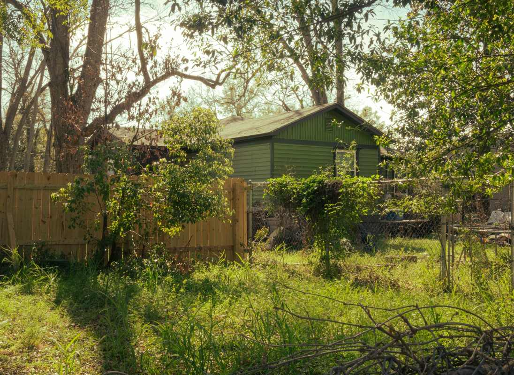

An HOA or city letter almost always names one specific thing and gives you a date. Most violations in the northern suburbs are what Texas law calls curable, which means fixing it by the deadline ends it. The catch is that a lot of what triggered the letter has to physically leave the property, not just move behind the fence.

That last part is where people get a second letter.
What actually gets reported
Neighbors and drive-by code officers report what they can see from the street or from an upstairs window next door. Almost nothing gets reported because of what is inside a garage with the door closed.
The list is short and it repeats. Grass and weeds over the height in the ordinance, usually with the back corner and the alley strip forgotten. A brush pile from a tree trim that has sat there long enough to gray out. Old fence panels leaned against the side of the house after a section blew down. A mattress, couch, or busted patio set on the driveway or in the side yard. Leftover building material from a project that stalled, like stacked shingles or a pile of drywall scrap. An appliance sitting outside, which is its own category because most ordinances name it directly. A trailer or an inoperable vehicle parked where the covenants do not allow it.
The pattern is that all of it sits in the open. A pile that was going to get dealt with next weekend became a violation because it was still there three weekends later.
The letter, and what the deadline actually means
Texas property owners associations do not automatically get to fine anybody. That power has to come from the governing documents, and where it exists, the association has to send written notice first. The Texas State Law Library lays it out plainly in its guide to restrictive covenants and enforcement: the notice has to describe the violation, state the proposed fine, tell you that you have 30 days to request a hearing before the board, and, when the violation is curable, give you a reasonable amount of time to fix it before any fine lands.
Maintenance violations are listed there as the curable kind, so a yard full of brush is usually not a fine yet. What it is is a deadline you can still beat.
A letter from the city works differently and lands in the same place. Plano runs enforcement through its Property Standards Division, Frisco through Code Enforcement, and McKinney through Code Compliance. Each one inspects, sends notice, gives a compliance window, then rechecks. The recheck is the part that matters, because the officer is coming back to look at the same spot from the same angle.
So read the letter for two things. What exactly is named, and what the date is. The rest is procedure.
Moving it behind the fence is the most common way to fail the recheck. If the pile is visible from the alley, or from a neighbor's second floor, it is still visible. Association covenants in a lot of these neighborhoods cover the whole lot, not just the front. Get it off the property and the item cannot be reported again.
What we take off an HOA cleanup
The work itself is ordinary. It is the deadline that makes people call.
Brush, limbs, and bagged yard waste, which most cities keep off the bulky trash list entirely, as covered in brush piles, tree limbs and what the city will not collect. Old fence panels and posts, including the concrete footings once they have been dug out, which is covered in more depth in fence and deck teardown debris. Rotted patio furniture, a grill nobody has lit in three years, a trampoline frame. Mattresses and couches that ended up outside. Leftover material from a stalled project. Appliances, including the ones that have been sitting behind the gate since spring.
We do not take household hazardous waste, and side yards tend to have some. Paint, stain, thinner, motor oil, gasoline in a can, pool chemicals, and propane tanks all go to your city's household chemical collection program instead, which most cities here run free for residents. What we will and will not load is spelled out in what junk removal will and will not take.
We also do not mow, trim, or landscape. We are haulers, and we will not pretend otherwise. If the violation is grass height, that is a mower. If the violation is the pile of everything that came off the yard, that is the part we handle. Plenty of these jobs are a lawn crew in the morning and us in the afternoon.
Do the free route first when it fits
Most cities here run bulky waste collection on a published schedule, and if your deadline is far enough out to catch the next pickup, that is the cheaper answer and we would rather say so. Plano publishes its rules under bulky waste collection, Frisco under bulk trash pickup, and McKinney under residential trash services. We would rather tell you the truth and lose the small job than take money you did not have to spend.
Three things send people to us instead. The pickup date lands after the compliance date. The pile is over the city's limit, so putting all of it out becomes its own violation. Or the item is on the excluded list, which is where remodel material, tires, and anything with a refrigerant line usually sit.
There is a fourth, and on a corner lot it is the common one. The city wants it at the curb on a specific day, and the association does not want a pile at the curb at all. A crew that loads from where the pile actually sits solves that in an afternoon.
How the job runs against a deadline
Send a photo of the yard, and include a photo of the letter if you have it, because the letter tells us what has to be gone rather than what looks bad to us.
A crew comes out, walks the property, and gives you a firm number before anything is loaded, with disposal already included. The quote is the bill. Then we load, and the spot gets raked and swept before we leave, because a clean patch of dirt is what the recheck is looking at.
Our own crews do this, not gig labor hired off an app that morning, which is why we are comfortable working a side yard and a back gate without somebody standing over us. We run seven days a week across Plano, Frisco, Allen, McKinney, Richardson, Little Elm, Prosper, The Colony, Wylie and Fairview. Call before noon and the same afternoon is typical, though typical is the honest word rather than a promise. That includes clearing the yard waste in Allen and picking up cut limbs and clippings in Little Elm after an HOA notice. The service page for this work is yard debris and brush removal, and you can send us a photo whenever you are ready.
Frequently asked questions
Can you get here before my compliance date?
Usually, and it is the first thing to tell us when you call. Give us the date on the letter and we will say straight whether we can make it rather than booking you and hoping.
Do you mow or trim as part of the cleanup?
No. We haul. If the violation is grass height you need a mower, and if the violation is the pile that came off the yard, that part is ours.
The pile is behind my fence. Is that still a violation?
It can be. Many association covenants cover the entire lot, and an alley or a neighbor's second-floor window still sees it. Read what the letter actually names, and when in doubt, get it off the property.
Will you take the leftover paint and pool chemicals too?
No, and nobody should put those on a trailer. They go to your city's household chemical collection program, which most cities here run free for residents. We will point you to yours.
Do I have to be home?
For an outside cleanup, usually not, as long as we can reach the pile and you have approved the quote. Gate codes and where the pile sits are the two things we need in writing.
An HOA letter reads like an accusation, and most of the time it is really just a date. Name what has to go, get it off the property, and the recheck stops being a problem. The rest of what we haul is on the services page. There is no rush on our end.